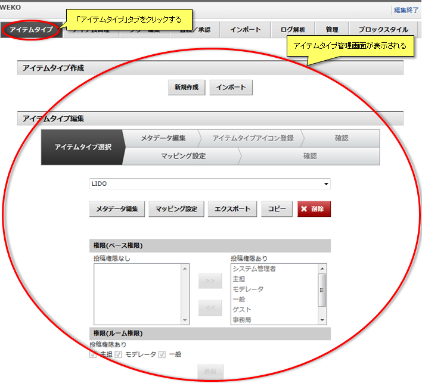
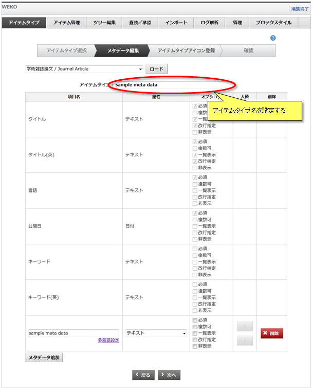

アイテムタイプ管理(作成/編集)
「アイテムタイプ」タブをクリックするとアイテムタイプ管理画面が表示されます。
アイテム登録に利用するアイテムタイプを作成または編集することができます。

アイテム登録に利用するアイテムタイプを作成または編集することができます。
デフォルトアイテムタイプ
WEKOには10種類のアイテムタイプがデフォルトでインストールされています。
デフォルトアイテムタイプ一覧は下記のとおりです。
デフォルトアイテムタイプ一覧は下記のとおりです。
| アイテムタイプ名 | 項目名 | 属性 | オプション | ||||
|---|---|---|---|---|---|---|---|
| 必須 | 複数可否 | 一覧表示 | 改行指定 | 非表示 | |||
|
学術雑誌論文 / Journal Article 紀要論文 / Departmental Bulletin Paper 会議発表論文 / Conference Paper 一般雑誌記事 / Article その他 / Others （同様のメタデータ構成を持つ アイテムタイプが5種類存在する） |
その他(別言語等)のタイトル | テキスト | × | ○ | × | × | × |
| 著者 | 氏名 | ○ | ○ | ○ | ○ | × | |
| 著者別名 | 氏名 | × | ○ | × | × | × | |
| 著者ID | テキスト | × | ○ | × | × | × | |
| 抄録 | テキストエリア | × | ○ | × | × | × | |
| 内容記述 | テキストエリア | × | ○ | × | × | × | |
| 書誌情報 | 書誌情報 | × | - | ○ | × | × | |
| 出版者 | テキスト | × | ○ | × | × | × | |
| ISSN | テキスト | × | × | × | × | × | |
| ISBN | テキスト | × | ○ | × | × | × | |
| 書誌レコードID | テキスト | × | × | × | × | × | |
| 論文ID(NAID) | テキスト | × | × | × | × | × | |
| PubMed番号 | テキスト | × | × | × | × | × | |
| DOI | テキスト | × | × | × | × | × | |
| 権利 | テキスト | × | ○ | × | × | × | |
| 情報源 | テキスト | × | ○ | × | × | × | |
| 関連サイト | リンク | × | ○ | × | × | × | |
| 他の資源との関係 | テキスト | × | ○ | × | × | × | |
| フォーマット | テキスト | × | ○ | × | × | × | |
| 著者版フラグ | 選択式(プルダウン) | × | - | × | × | × | |
| 日本十進分類法 | テキスト | × | ○ | × | × | × | |
| コンテンツ本体 | ファイル | × | ○ | ○ | - | × | |
| 見出し | 見出し | × | - | × | × | × | |
| 会議発表用資料 | その他(別言語等)のタイトル | テキスト | × | ○ | × | × | × |
| 著者 | 氏名 | ○ | ○ | ○ | ○ | × | |
| 著者別名 | 氏名 | × | ○ | × | × | × | |
| 著者ID | テキスト | × | ○ | × | × | × | |
| 抄録 | テキストエリア | × | ○ | × | × | × | |
| 会議概要(会議名，開催地，会期，主催者等) | テキスト | × | ○ | ○ | × | × | |
| 発表年月日 | 日付 | × | × | × | × | × | |
| 公開者 | テキスト | × | ○ | × | × | × | |
| 権利 | テキスト | × | ○ | × | × | × | |
| 情報源 | テキスト | × | ○ | × | × | × | |
| 関連サイト | リンク | × | ○ | × | × | × | |
| 他の資源との関係 | テキスト | × | ○ | × | × | × | |
| フォーマット | テキスト | × | ○ | × | × | × | |
| 著者版フラグ | 選択式(プルダウン) | × | - | × | × | × | |
| 日本十進分類法 | テキスト | × | ○ | × | × | × | |
| コンテンツ本体 | ファイル | × | ○ | ○ | - | × | |
| 見出し | 見出し | × | - | × | × | × | |
| 学位論文 / Thesis or Dissertation | その他(別言語等)のタイトル | テキスト | × | ○ | × | × | × |
| 著者 | 氏名 | ○ | ○ | ○ | ○ | × | |
| 著者別名 | 氏名 | × | ○ | × | × | × | |
| 著者ID | テキスト | × | ○ | × | × | × | |
| 公開者 | テキスト | × | ○ | × | × | × | |
| 寄与者 | テキスト | × | ○ | × | × | × | |
| 抄録 | テキストエリア | × | ○ | × | × | × | |
| 学位名 | テキスト | × | × | ○ | × | × | |
| 学位授与機関 | テキスト | × | × | ○ | × | × | |
| 学位授与年度 | テキスト | × | ○ | ○ | × | × | |
| 学位授与年月日 | 日付 | × | × | × | × | × | |
| 学位授与番号 | テキスト | × | × | ○ | × | × | |
| 権利 | テキスト | × | ○ | × | × | × | |
| 情報源 | テキスト | × | ○ | × | × | × | |
| 関連サイト | リンク | × | ○ | × | × | × | |
| 他の資源との関係 | テキスト | × | ○ | × | × | × | |
| フォーマット | テキスト | × | ○ | × | × | × | |
| 著者版フラグ | 選択式(プルダウン) | × | - | × | × | × | |
| 日本十進分類法 | テキスト | × | ○ | × | × | × | |
| コンテンツ本体 | ファイル | × | ○ | ○ | - | × | |
| 見出し | 見出し | × | - | × | × | × | |
| 報告書 / Research Paper | その他（別言語等）の研究課題名 | テキスト | × | ○ | × | × | × |
| 研究代表者 | 氏名 | ○ | × | ○ | ○ | × | |
| 研究代表者別名 | 氏名 | × | × | × | × | × | |
| 研究代表者ID | テキスト | × | × | × | × | × | |
| 研究分担者 | 氏名 | × | ○ | × | × | × | |
| 研究分担者別名 | 氏名 | × | ○ | × | × | × | |
| 研究分担者ID | テキスト | × | ○ | × | × | × | |
| 報告年度 | 日付 | × | × | ○ | × | × | |
| 研究課題番号 | テキスト | × | × | ○ | × | × | |
| 研究代表者番号 | テキスト | × | × | × | × | × | |
| 研究機関 | テキスト | × | × | × | × | × | |
| 助成元 | テキスト | × | ○ | × | × | × | |
| 抄録 | テキストエリア | × | ○ | × | × | × | |
| 内容記述 | テキストエリア | × | ○ | × | × | × | |
| 権利 | テキスト | × | ○ | × | × | × | |
| 情報源 | テキスト | × | ○ | × | × | × | |
| 関連サイト | リンク | × | ○ | × | × | × | |
| 他の資源との関係 | テキスト | × | ○ | × | × | × | |
| フォーマット | テキスト | × | ○ | × | × | × | |
| 著者版フラグ | 選択式(プルダウン) | × | - | × | × | × | |
| 日本十進分類法 | テキスト | × | ○ | × | × | × | |
| コンテンツ本体 | ファイル | × | ○ | ○ | - | × | |
| 見出し | 見出し | × | - | × | × | × | |
| 図書 / Book | その他(別言語等)のタイトル | テキスト | × | ○ | × | × | × |
| 著者 | 氏名 | ○ | ○ | ○ | ○ | × | |
| 著者別名 | 氏名 | × | ○ | × | × | × | |
| 著者ID | テキスト | × | ○ | × | × | × | |
| 抄録 | テキストエリア | × | ○ | × | × | × | |
| 内容記述 | テキストエリア | × | ○ | × | × | × | |
| 出版者 | テキスト | × | ○ | × | × | × | |
| 出版年月日 | 日付 | × | × | ○ | × | × | |
| ISSN | テキスト | × | × | × | × | × | |
| ISBN | テキスト | × | ○ | × | × | × | |
| 書誌レコードID | テキスト | × | × | × | × | × | |
| 権利 | テキスト | × | ○ | × | × | × | |
| 情報源 | テキスト | × | ○ | × | × | × | |
| 関連サイト | リンク | × | ○ | × | × | × | |
| 他の資源との関係 | テキスト | × | ○ | × | × | × | |
| フォーマット | テキスト | × | ○ | × | × | × | |
| 著者版フラグ | 選択式(プルダウン) | × | - | × | × | × | |
| 日本十進分類法 | テキスト | × | ○ | × | × | × | |
| コンテンツ本体 | ファイル | × | ○ | ○ | - | × | |
| 見出し | 見出し | × | - | × | × | × | |
| 図書の一部 / Book | その他(別言語等)のタイトル | テキスト | × | ○ | × | × | × |
| 著者 | 氏名 | ○ | ○ | ○ | ○ | × | |
| 著者別名 | 氏名 | × | ○ | × | × | × | |
| 著者ID | テキスト | × | ○ | × | × | × | |
| 抄録 | テキストエリア | × | ○ | × | × | × | |
| 内容記述 | テキストエリア | × | ○ | × | × | × | |
| 図書名 | テキスト | × | × | ○ | × | × | |
| 出版者 | テキスト | × | ○ | × | × | × | |
| 開始ページ | テキスト | × | × | ○ | × | × | |
| 終了ページ | テキスト | × | × | ○ | × | × | |
| 出版年月日 | 日付 | × | × | ○ | × | × | |
| ISSN | テキスト | × | × | × | × | × | |
| ISBN | テキスト | × | ○ | × | × | × | |
| 書誌レコードID | テキスト | × | × | × | × | × | |
| 権利 | テキスト | × | ○ | × | × | × | |
| 情報源 | テキスト | × | ○ | × | × | × | |
| 関連サイト | リンク | × | ○ | × | × | × | |
| 他の資源との関係 | テキスト | × | ○ | × | × | × | |
| フォーマット | テキスト | × | ○ | × | × | × | |
| 著者版フラグ | 選択式(プルダウン) | × | - | × | × | × | |
| 日本十進分類法 | テキスト | × | ○ | × | × | × | |
| コンテンツ本体 | ファイル | × | ○ | ○ | - | × | |
| 見出し | 見出し | × | - | × | × | × | |
アイテムタイプ作成
新規作成
アイテムタイプを新規に作成することができます。
「新規作成」ボタンをクリックするとアイテムタイプ名入力欄が表示されます。
「」 アイテムタイプ名入力欄にアイテムタイプ名を入力し、「次へ」ボタンをクリックします。
「次へ」ボタンをクリックすると、アイテムタイプメタデータ編集画面が表示されます。
アイテムタイプメタデータの編集方法についてはアイテムタイプメタデータ編集をご覧ください。
「新規作成」ボタンをクリックするとアイテムタイプ名入力欄が表示されます。
「」 アイテムタイプ名入力欄にアイテムタイプ名を入力し、「次へ」ボタンをクリックします。
「次へ」ボタンをクリックすると、アイテムタイプメタデータ編集画面が表示されます。
アイテムタイプメタデータの編集方法についてはアイテムタイプメタデータ編集をご覧ください。
アイテムタイプインポート
アイテムタイプをWEKOインポート形式のファイルからインポートすることができます。
「インポート」ボタンをクリックするとインポートファイル指定欄が表示されます。
「参照」ボタンをクリックすると、ファイル選択ダイアログが表示されます。
ファイル選択ダイアログからインポートファイルを選択し、「インポート」ボタンをクリックするとアイテムタイプがインポートされ、インポート結果画面が表示されます。
【注意事項】
「インポート」ボタンをクリックするとインポートファイル指定欄が表示されます。
「参照」ボタンをクリックすると、ファイル選択ダイアログが表示されます。
ファイル選択ダイアログからインポートファイルを選択し、「インポート」ボタンをクリックするとアイテムタイプがインポートされ、インポート結果画面が表示されます。
【注意事項】
- WEKOインポート形式のファイルとは、アイテムタイプの情報が記述されたXML(import.xml)およびアイテムタイプアイコンファイルがまとめられたZIPファイルです。
- メタデータ構成の異なる同名のアイテムタイプ名が存在した場合は、元のアイテムタイプ名に自動的にサフィックスを付加し、「アイテムタイプ名_XX」としてインポートされます。
アイテムタイプ編集
メタデータ編集
指定したアイテムタイプのメタデータを編集することができます。
セレクトボックスからアイテムタイプを選択し、「メタデータ編集」ボタンをクリックすると、アイテムタイプメタデータ編集画面が表示されます。
アイテムタイプメタデータの編集方法についてはアイテムタイプメタデータ編集をご覧ください。
セレクトボックスからアイテムタイプを選択し、「メタデータ編集」ボタンをクリックすると、アイテムタイプメタデータ編集画面が表示されます。
アイテムタイプメタデータの編集方法についてはアイテムタイプメタデータ編集をご覧ください。
マッピング設定
指定したアイテムタイプのマッピング設定を編集することができます。
セレクトボックスからアイテムタイプを選択し、「マッピング設定」ボタンをクリックするとアイテムタイプマッピング編集画面が表示されます。
アイテムタイプマッピングの編集方法についてはアイテムタイプマッピング編集をご覧ください。
セレクトボックスからアイテムタイプを選択し、「マッピング設定」ボタンをクリックするとアイテムタイプマッピング編集画面が表示されます。
アイテムタイプマッピングの編集方法についてはアイテムタイプマッピング編集をご覧ください。
エクスポート
指定したアイテムタイプをWEKOインポート形式でエクスポートすることができます。
セレクトボックスからアイテムタイプを選択し、「エクスポート」ボタンをクリックするとファイル保存ダイアログが起動し、WEKOインポート形式でアイテムタイプの情報をダウンロードできます。
エクスポートしたZIPファイルは、そのままアイテムタイプのインポートで使用することができます。
【注意事項】
セレクトボックスからアイテムタイプを選択し、「エクスポート」ボタンをクリックするとファイル保存ダイアログが起動し、WEKOインポート形式でアイテムタイプの情報をダウンロードできます。
エクスポートしたZIPファイルは、そのままアイテムタイプのインポートで使用することができます。
【注意事項】
- WEKOインポート形式のファイルとは、アイテムタイプの情報が記述されたXML(import.xml)およびアイテムタイプアイコンファイルがまとめられたZIPファイルです。
コピー
指定したアイテムタイプをコピーすることができます。
セレクトボックスからアイテムタイプを選択し、「コピー」ボタンをクリックするとアイテムタイプがコピーされます。
【注意事項】
セレクトボックスからアイテムタイプを選択し、「コピー」ボタンをクリックするとアイテムタイプがコピーされます。
【注意事項】
- コピーされたアイテムタイプの名称はコピー元の名称に自動的にサフィックスを付加し、「コピー元のアイテムタイプ名_XX」となります。
削除
指定したアイテムタイプを削除することができます。
セレクトボックスからアイテムタイプを選択し、「削除」ボタンをクリックすると削除確認画面が表示され、「OK」ボタンをクリックするとアイテムタイプが削除されます。
【注意事項】
セレクトボックスからアイテムタイプを選択し、「削除」ボタンをクリックすると削除確認画面が表示され、「OK」ボタンをクリックするとアイテムタイプが削除されます。
【注意事項】
- 削除したアイテムタイプを使用してアイテムを新規作成することはできません。
- 削除したアイテムタイプに属するアイテムは引き続き利用することができます。
アイテムタイプメタデータ編集
アイテムタイプのメタデータ属性を編集することができます。
ロード
既存アイテムタイプに設定されているメタデータ属性をロードすることができます。
セレクトボックスからアイテムタイプを選択し、「ロード」ボタンをクリックすると、選択したアイテムタイプのメタデータ属性がロードされます。
ロードを実行すると、編集中の項目はすべて上書きされます。
セレクトボックスからアイテムタイプを選択し、「ロード」ボタンをクリックすると、選択したアイテムタイプのメタデータ属性がロードされます。
ロードを実行すると、編集中の項目はすべて上書きされます。
アイテムタイプ名変更
メタデータ属性編集画面では、アイテムタイプ名の変更も行うことができます。

メタデータ項目名編集
メタデータ属性名の設定をすることができます。
表示されている言語のテキストボックスにその言語で表示する項目名を記述します。
項目名のテキストボックスの入力内容とデフォルトのテキストボックスの入力内容は同じになります。
表示されている言語のテキストボックスにその言語で表示する項目名を記述します。
項目名のテキストボックスの入力内容とデフォルトのテキストボックスの入力内容は同じになります。
メタデータ属性編集
アイテムタイプのメタデータ属性を編集することができます。
ただし、下記6つのメタデータ属性はアイテムの基本属性となるため変更、削除することはできません。
「メタデータ追加」リンクをクリックすると、メタデータ属性入力欄が追加されます。
「↑」または「↓」ボタンをクリックすると、メタデータ属性入力欄の表示位置が入れ替わります。
「削除」ボタンをクリックすると、メタデータ属性入力欄が削除されます。
セレクトボックスからメタデータ属性を選択します。
メタデータ属性は下記の12種類があります。
メタデータ属性に応じて、アイテム登録時の入力形式が決定されます。
アイテム属性タイプにチェックボックス、選択肢(ラジオ)、選択肢(プルダウン)のいずれかを選択した場合、選択肢入力欄が表示されます。
選択肢入力欄に選択肢を「|」(半角パイプ)区切りで入力します。
チェックボックスにチェックを入れ、オプションを設定します。
オプションのチェックボックスにチェックを入れると有効となり、チェックを外すと無効となります。
オプションの詳細は下記の通りです。
ただし、下記6つのメタデータ属性はアイテムの基本属性となるため変更、削除することはできません。
| 項目名 | 属性 | オプション | ||||
|---|---|---|---|---|---|---|
| 必須 | 一覧表示 | 複数可否 | 改行指定 | 非表示 | ||
| タイトル | テキスト | ○ | × | ○ | ○ | × |
| タイトル(英) | テキスト | ○ | × | ○ | ○ | × |
| 言語 | テキスト | ○ | × | × | × | × |
| 公開日 | 日付 | ○ | × | × | × | × |
| キーワード | テキスト | × | × | × | × | × |
| キーワード(英) | テキスト | × | × | × | × | × |
「メタデータ追加」リンクをクリックすると、メタデータ属性入力欄が追加されます。
「↑」または「↓」ボタンをクリックすると、メタデータ属性入力欄の表示位置が入れ替わります。
「削除」ボタンをクリックすると、メタデータ属性入力欄が削除されます。
セレクトボックスからメタデータ属性を選択します。
メタデータ属性は下記の12種類があります。
メタデータ属性に応じて、アイテム登録時の入力形式が決定されます。
| メタデータ属性 | 固定オプション | 概要 | アイテム登録時のサンプル | ||||||||||||||
|---|---|---|---|---|---|---|---|---|---|---|---|---|---|---|---|---|---|
| テキスト | 1行テキスト入力 | ||||||||||||||||
| テキストエリア | 複数行テキスト入力 | ||||||||||||||||
| リンク | URLリンク入力 | 表示名: URL: | |||||||||||||||
| チェックボックス | 複数不可 | 複数選択(チェックボックス)入力 |
aaa bbb ccc |
||||||||||||||
| 選択式(ラジオ) | 複数不可 | 単一選択(ラジオボタン)入力 |
aaa bbb ccc |
||||||||||||||
| 選択式(プルダウン) | 複数不可 | 単一選択(プルダウン)入力 | |||||||||||||||
| 氏名 | 姓、名、姓(ヨミ)、名(ヨミ)、email入力、著者ID |
姓名(ヨミ)は氏名タイプに言語として「日本語」を選択する事で表示されます。 設定方法はマッピング設定をご覧ください。 |
|||||||||||||||
| 書誌情報 | 複数不可 | 雑誌名、巻、号、ページ、発行年月日入力 |
雑誌名 : 雑誌名(英) : 巻 :, 号 :, ページ : - , 発行年 :年 月 日 |
||||||||||||||
| 日付 | 年、月、日入力 | 年 月 日 | |||||||||||||||
| ファイル | 改行指定 | ファイル入力 | |||||||||||||||
| サムネイル | 画像ファイル(PNG,JPEGなど)入力 | ||||||||||||||||
| サプリメンタルコンテンツ | 任意 |
サプリメンタルコンテンツ登録 |
サプリメンタルコンテンツの登録はアイテム登録ではなく、アイテム詳細から行います。 登録方法はサプリメンタルコンテンツの登録をご覧ください。 |
||||||||||||||
| 見出し | インデックス検索のみ |
大見出し、大見出し（英語）、小見出し、小見出し（英語） |
ツリー編集の検索結果表示形式から目次形式を選択する事で表示されます。 表示方法はインデックスの情報の編集をご覧ください。 |
||||||||||||||
アイテム属性タイプにチェックボックス、選択肢(ラジオ)、選択肢(プルダウン)のいずれかを選択した場合、選択肢入力欄が表示されます。
選択肢入力欄に選択肢を「|」(半角パイプ)区切りで入力します。
例：AAA|BBB|CCC
チェックボックスにチェックを入れ、オプションを設定します。
オプションのチェックボックスにチェックを入れると有効となり、チェックを外すと無効となります。
オプションの詳細は下記の通りです。
| オプション | 概要 |
|---|---|
| 必須 |
アイテム登録時に*を表示し、必須入力メタデータとすることができます。 必須メタデータが入力されていないアイテムは公開することができません。 |
| 複数可 | アイテム登録時にを表示し、メタデータの複数入力を可能にします。 |
| 一覧表示 | インデックスサーチおよびキーワードサーチ結果表示にメタデータを表示することができます。 |
| 改行指定 | インデックスサーチおよびキーワードサーチ結果でのメタデータ表示後に改行を行うことができます。 |
| 非表示 |
インデックス、キーワードサーチ結果およびアイテム詳細にメタデータの詳細を表示しないようにできます。 ただしアイテムエクスポートにより出力した情報には記載されます。 また、アイテム登録者のみワークフローでの表示にて登録内容が灰色で表示されます。 |
アイテムタイプアイコン登録
アイテムタイプアイコンには画像ファイル(*.gif, *.jpg, *.png)を登録することができます。
登録されたアイコンは「16×16ピクセル」サイズに縮小され、アイテム情報の表示に利用されます。
「参照」ボタンをクリックするとファイル選択ダイアログが表示されます。
ファイル選択ダイアログから画像ファイルを指定し、「次へ」ボタンをクリックするとアイテムタイプメタデータ属性登録情報確認画面が表示されます。
【注意事項】
登録されたアイコンは「16×16ピクセル」サイズに縮小され、アイテム情報の表示に利用されます。
「参照」ボタンをクリックするとファイル選択ダイアログが表示されます。
ファイル選択ダイアログから画像ファイルを指定し、「次へ」ボタンをクリックするとアイテムタイプメタデータ属性登録情報確認画面が表示されます。
【注意事項】
- アイテムタイプアイコンの登録は必須ではありません。
アイテムタイプメタデータ属性登録情報確認
アイテムタイプのメタデータ属性登録情報を確認します。
「決定」ボタンをクリックするとアイテムタイプが登録され、自動的にアイテムタイプ管理画面へ移動します。
【注意事項】
「決定」ボタンをクリックするとアイテムタイプが登録され、自動的にアイテムタイプ管理画面へ移動します。
【注意事項】
-
新規作成したアイテムタイプにはOAI-PMHマッピングが設定されていません。
OAI-PMHマッピングの設定方法についてはアイテムタイプ管理(OAI-PMHマップ)をご覧ください。